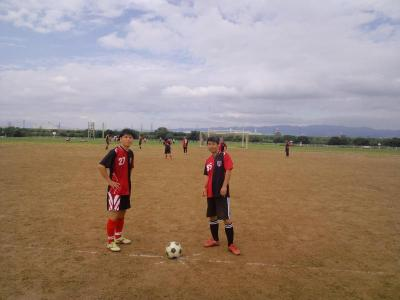
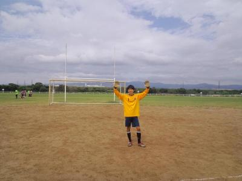

皆さん本日はおつかれさまでした。
初めて書いてみました(￣▽￣)
今日の相手は、強かったですね。
連チャンなのにガンガンくるし、、
ほとんどボールに触れなかったような気が、、
足技100とかいう本で研究してますが、それ以前の問題、、体力と足腰鍛えなおします(￣(工)￣)
あとＰK取られちゃってスンマセン（；￣ェ￣）キーパーが止めてくれて、神にみえました。ありがとうございました神様！ただあのファール、、後で気付いたけど狙ってたっぽい、、(~_~;)ヤラレタ
まだまだ足引っ張るかもですが、頑張ってサッカー楽しみますのでこれからもヨロシク。
あ、、朝、ハマサンの車尾行して、スンマセン(￣(工)￣)一人であの樹海を抜けるのは無理でした。神様にみえました。ありがとう神様。
点取ってないけど書いてみました。長文すんません。
なんか、掲示板の形式が変わって見やすいような違和感があるような感じがします。
あんまり気にしてなかったけど、夜中に雨が結構降ったみたいでしたね。朝起きて、空見てたら雨の心配は大丈夫と思いましたが、グランドがどうかなって心配でした。現地に行ってみると、ぬかるみもなく、とてもいい感じで、おまけに浜さんが夜中にハサミで草刈りをしてくれたみたいでとてもいいグランドになってましたー。
今日も先週と同じで合計１０名でした。もともとつよぽんが遅刻予定でしたが、もう1人昨日に芋ほりして疲れて寝坊したプレッシャーに弱い人がいましたね～。
最初は８人だったので、各自ボールとか蹴った後に、一度だけ遊びでサッカーゴルフしました。かきさんとまえちゃんのチーム編成がおもろかったです、でも僕がめちゃ期待外れなことやいらんことして、冷たい目線を浴びて、散々でした（涙）
その後は、パス練習ですね。わだっち提案の４角に囲んでくるくる回りながらを反対方向も含めてして、その後は先週もしたみたいですが、鳥かごもどき？？実質は中の人間が２対２で奪い合ってでかなり疲れました。うーん説明は難しいっす。
つよぽんとかが来たので、ゴールを立ててシュート練習をしました。ポスト役がボールを受けて、パス出した人に下げて、走りこんだところにパスをもらったり、ポスト役がボールを受けて、そのままターンしてシュートって感じでしました。
その後は、センタリングシュートをしました。真ん中から少しドリブルして、デフェンス代わりに置いたコーンの手前でサイドにパスして、ゴールへ走りこんで、サイドからはセンタリングを中の動きに合わせてあげてました。結構、何本かヘディングシュートとかボレーシュートとかいいのがありましたね。
その後はミニゲでした。うーんいろいろ書くことがあるような無いような・・・。まずはかきさんがわだっちに教えてもらったテクをまえちゃんに試すというより、1人で酔っ払い？？すんなりやられてました。まえちゃんは今日もトリッキーな動きで、ボール取ろうとするスルーやくるくるしながらゴールを決めたりと、ハマさんが特にやられてた気がします（笑）。
ごりんさんがかきさんに味方なのに後ろから指で攻撃されてちょっとおかんむり状態だったりとかいろいろありましたね。
その中で最大なのはわだっちが何をどうしたかったのか、ドフリーな状態でつまずいて、ボールは転々と転がって見事にオウンゴール（笑）。まあ、僕も派手にこけて自爆したけど、テラさんも意味わからんところでこけてたし。
あとはまっとんが意外とコスくてデビルなのが良くわかりました。（笑）まえちゃんも一度抜かれたようになって、その後はまっとんにやり返そうとしていたのが印象的でした。
まあ、そんな感じの一日でした。１０人と少なかったですが、楽しく出来ました。参加された皆さん、お疲れ様でした。
来週は練習試合ですので（たぶん、再来週も）、朝早いですが寝坊せずに出来るだけ参加のほどよろしくお願いします。
昨日はみなさんお疲れさまでした！
10人と日頃に比べては少ない人数でしたが、楽しくサッカーができました。
はじめに、わだっち考案のパス回し練習！
四つのコーンを四角において、辺に沿ってパスを回すやつで、正確なパス&トラップができないと、後続が詰まるため、程良いプレッシャーの中、良い練習ができました。
次回も是非やりたいですね！
次は、さっそくミニゲーム。
なにせ人数が少ないので、休むとすぐカウンターを食らいます。
さすがのテラさん、わだっちは無尽蔵のスタミナで走り回っていましたが、僕は得意のコスさでもごまかしきれず、ミニゴールを巧みに手でずらし、まっとんさんのナイスシュートを枠外に導きました。まっとんさん、すみませんでした。。。その後、ライン際ですわりこんだまっとんさんを見て、悲しい気持ちになりました。
あとは、お馴染み前ちゃんキープのお時間！
今日も人を変えながら、巧みなボール捌きで皆を餌食にしていました。足元のボールを両手で拾うかと見せかけてのフェイント。もはや神業としか言えません。
ボールと共にゴールへ突っ込んだたっちゃん兵、華々しく散りました。
横でハイトーンボイスで子供を指導するおねえさん？に、浜さん、心を奪われました。(あれはきっとおにいさんです。)
季節の変わり目ですので、体調管理に気をつけて、サッカーを楽しみましょう！
ではでは。
皆さん、お疲れ様でした。
最後の１本しか見れませんでしたが、得点もあり
いい試合を見せて頂きました。
正直、タカさーんチェックを出来るほど、細かくは
覚えておりません・・。 スミマセン！
よっしーさん、調子を上げて来てますねぇ、狙いすました2得点、
さすがです！
最初は誰が蹴ったか見えてなかったのですが、クロスバー直撃弾！良かったですねぇ。
わだっちさんの積極性、さすがです！
自分的には、わだっちさんが自陣中ほどで、敵がプレスしてくる中、敵をおびき寄せて、
足裏バックパスで、見方の誰かとボールを渡して入れ替わったプレーが、印象に残りましたね。
そんな落ち着いたプレーを自分もしたいです。（なかなか出来ませんが・・。）
あと１日無失点はすごいと思います。
足の方は、まだ走る事は出来ませんが、何とか普通に歩ける様になりましたので
早く皆さんと一緒にボールが蹴れる様にストレッチなどをして完治する様に頑張ります。
もうしばらくお休みしますが、皆さんサッカーの時間をエンジョイして下さいね！
とりあえず、復帰したら、よっしーゾーンにボール流します。（^^）
皆さん、お疲れさまでした。
6時半、起床予定が少し寝過ごしちゃいました。
申し訳ございませんm(__)m
ゆうちゃん、帰りに、いいとこなかった。って、凹んでましたけど、1本目のコナーキック、めっちゃきれいなボールでしたよ。それを確実にきめたキングカツさんもさすがですね。
やっばり、1本目、2本目の試合で、点をとれるのが、理想ですね。5本目なんて、相手のバックの足、完全に止まってますし、いいパスもらったら、どフリー、キーパーと1対1みたいな。
毎回、毎回、接待パスを頂いて、本当にすいません。本当は、わだっちみたいに、走り周りたいんですけどねぇ(-_-;)
マッサンの言ってる、空振りって、ゆーのが、どれのことやったか、ありすぎてわからないんですけど、前ちゃんから、キーパーの目の前で、パスもらって、キーパーの真正面にシュート、ってゆーのは、あったんですけど、あれは、しっかりあたってんで、それとは、違いますよね？前ちゃん、すいませんm(__)m
頑張ってはしるので、今後とも宜しくお願いします。
皆さん、お疲れさまでした。
皆さん、お疲れ様でした。気候もだいぶ涼しくなり絶好のサッカー日和になってきました。私の老体にはいい感じです。まっさんがおっしゃるとおり、今日の武勇伝を話しながら、嫁さんと晩酌しています。
試合前、ユウちゃんと二人のコンビで３点いこうねと話していたのですが、その一発目のチャンスがコーナーキックでした。ユウちゃんの絶妙のボールが自分に来たとき、頭をよぎったのは、これをゴールしなければ、まっさんのイジリの餌食になりそう～（笑）、でした。
ドンピシャ、タイミングが合ってゴールできてよかったです。ユウちゃん、いいボールをありがとう。３点はいけなかったけど、ゴールできてよかったです。
重病説をはねのけ、ますます元気なカツ爺です。これからもよろしくお願いします。
参加された皆さん
本日はお疲れ様でした。
菅ちゃんからのドンピシャの浮き球スルーパス、完ぺきでした～！
以前の試合で前ちゃんからの同じようなドンピシャパスを外していたので、今回決めれて良かったです！
ただそれ以外では、譲り合いからグダグダになってチャンスを逃したり、無人ゴールへのへなちょこシュート等、駄目でしたね。。。
最後に、まっさん、毎度の試合運営、有難うございます。
また、カツさんのヘディングシュート、よっしーの２点目の強烈シュート、美しかったです。
以上、今日は有難うございました。


昨晩に雨が結構降ってたみたいですね。グランドに向かう途中に道路とかに水たまりが結構あったりで、現地行ってから使用不可とかなったら嫌だなあって思ってたら、グランドはゴール付近だけぬかるみあったけど、それ以外はいい感じでした。なので、おNEWのスパイクデビューできました～。
本日は合計１５名の参加がありました。
朝早くから対戦して頂いたジュネオFCさん、いつもながらありがとうございます。お陰様で怪我とかもなく、ギスギスとかも無く楽しい時間を過ごさせて頂きました。今後ともよろしくお願い致します。
さて、今日も得点シーンを中心に振り返りたいと思います。（思い出しながら書くの大変なんよ～）
今日は合計で５本しました。
１本目は２０分でした。お互いに攻守があっていい展開でしたが、セットプレイでうちがものにしましたね。よっしゃんのコーナーキックもいい感じでしたが、そのちょっと後の左サイドからのコーナーキック、試合前に接待パス５本もらったら６本決めると言っていた、ユウちゃんとカツさんコンビが素晴らしいプレイを見せてくれました。ユウちゃんのコーナーキックが中央のややニアサイドで待つフリーのカツさんへドンピシャ、それをかっちょいい狙いすましたヘディングシュートで見事ゴール、きっと今頃は美味しいお酒を飲んでいることでしょう。久々の試合参加で僕も久々に会えたカツさんの活躍が嬉しかったです。重病説も流れていたので（笑）、カツさんにはぜひチーム最年長ゴール記録更新のコメントお待ちしています。
まあ、でもそれ以外は結構オフサイド食らってたけどね（笑）、あとごりんさんがデフェンスラインからゴール前までオーバーラップして切れ込んでたのもありましたね。
２本目も２０分でした。僕はこの試合からでしたが、せっかくのおニュースパイクで頑張ろうと思ってたけど、右サイド攻撃が多くて、左は来ない（涙）、まあ、怪我人なんであんまり切れ込んだり出来なかったんである意味良かったんだけどね。右サイドでは確かボランチのはずのごろうさんがかなり動いていて、あげくにはトップに来てたし（笑）
あまりボールが来ない中でも、それでも左サイドから逆サイドにフリーに走りこんでいるよっしーに３回クロスをあげたんだけど・・・まあいつもどおりですわ（笑）
３本目は１５分でした。この試合も攻守ともにいい感じでしたね。僕からのゴールキックを右サイドのスガちゃんへロングフィード、スガちゃんが追いついて、キープした後に中央にクロス、中央に居たまえちゃんが絶妙のトラップ、これは得点間違いない・・・あれ？（笑）、かきさんに動画取って見せたかった（笑）
４本目も１５分でした。僕は余ったポジションでボランチになりましたが、さっぱりわかりましぇーん、しかもボランチの相方がこすいスガちゃんだったんで、ほぼバック状態（笑）、そのスガちゃんはまあ、３本くらいラグビーゴールにゴールを決めてくれてました。でもいいプレーで何とか威厳を守れました、ほんまあれが無ければ用水路に水神祭の刑だったんですが（笑）
中央でスガちゃんがボールをキープして、浮き球で縦パス、絶妙なタイミングで右サイドの方から切れ込んできたごりんさんが浮き玉をうまくコントロール、キーパーが出てきていたところをその頭上を越えるお見事なループシュートでした。今日はこごりんが来ていなかったから、お父さん頑張ったよーって胸張って報告しといてくださいね。その反応をぜひコメントお待ちしてます。
個人的には今日は唯一のシュートシーンがありました。なんかゴール前でボールが跳ね返ってきて、みんな見ている感じで、ふっかんが打つのかなって思ったら、どうぞどうぞって感じで流れてきて、ボールをトラップして相手を交わしてシュートしたら僕もホームランでした。人のこと言えないっすね。
５試合目は２０分弱でした、厳密にいえば１９分くらいかな。次のグランド利用の少年サッカーの方々が待っていたので５分前にはどかないとと思ったので。
５本目も審判してましたが、一番見どころがあったんじゃないかなって思います。まず左サイドハーフのよっしゃんがボールに絡むことが凄く多くて、２人抜きとか切り込んだりで、僕の時は来なかったのにさ・・ぷんぷんとちょっとおかんむりでした（笑）、でも子どもさんが見に来てて、さぞかしお父さんかっちょいいって思ってもらえたことでしょう。
全般的に攻めてたと思いますが、キーパーしてたごろうさんが触れることも多かったような気がします。
ハイライトはゴール右側らへんで味方からのパスをナイストラップして、体制を整えていざシュート・・スカ・・・テラテラテーラテラ。
同じ場所辺りでまえちゃんがドリで切れ込んで絶妙なパスを受けたよっしーがシュート・・・スカ（まえちゃん曰くかすってたらしい）・・・今日も天然炸裂でした。そういえばごりんさんも焦ってスカしてたような（人間違いだったらごめんなさい）、なんにしろ空振りが目立ちましたね。
でもでも、今日のよっしーは最後に奮闘してくれました。ボールを受けて自らドリしてペナルティーエリアの付近、左４５度くらいから狙いすましたゴロのシュート、逆サイドのサイドネットを揺らしました。さらーに終了直前にも同じ位置でボールをもらって、自らドリ、シュートの位置もほぼ同じ、今度はキーパーの上を超す、いい感じのシュートが右サイドのほうに突き刺さりました。エアよっしーが無ければハットトリックやったのにね、ていうかよっしーは誰かからのクロスを合わせるんじゃなくて、自分でパス受けてドリして、左４５度の角度からがいいのが判明したので、皆さんこれからはよっしーゾーンと呼んで、期待しましょう。全般的に今日のよっしーのコメントお待ちしてます。
実は時間の関係で最後のよっしーにボールが渡る前に一度終了しようと思ったんだけど、最後に渡ったんでちょっと延長したら決めてくれました、そのまえにピーって吹いとけばおもろかったかも（笑）
残念ながら得点にはならなかったけど、こぼれ球をそのままダイレクトに蹴りこんだわだっちの黄金の左足からのボレーシュートが印象に残りましたね。強烈でゴールバーを直撃しました。今日も相変わらずの運動量でしたね。
あと、最後の５本目が始まるくらいにタカさんが見に来てくれました。早く怪我を治して、サイドハーフコンビで頑張りましょう。５試合目についてタカさーんチェーックお願いします（笑）
まあ、そんな感じの１日でした。人のこと言えないけど、シゲさん先週の練習で痛めて足大丈夫かな？僕もろっ骨が早く治さないと、ベルトまいてたら息苦しくて・・・まあ、今日はそれでダメダメだった言い訳にしときます（笑）
まあ、そんな感じの一日でした。参加された皆さん、お疲れ様でした。
ちなみに画像は今日のヒーロー２名＋メンバーといい人っぽく見えるけど騙されたらえらいことになる人の画像です（笑）
今日は連休の半ば？僕は始まりでしたけど、なんだかんだで合計１６名の参加がありました。
見学だけでも参加してくれたもりちゃんに久々に会えたのは良かったです。もりちゃん、タイム係ありがとうね。
体験参加の方も来られてて、お歳は５０代で動けないと言われてましたが、基礎も出来ていて、良く動かれていやいや十分だったと思います。また良ければ参加してもらえたらと思います。
今日は場所取りの関係で、すぐ横で陸上の練習みたいなのをしていて、子どもたちとかも結構いたので、安全優先にゴールは立てずにミニゴール中心でしました。
まずは鳥かごしてました。ちょっと長めでしましたが、アップにはいい感じですね。
次に一つのゴールを使って、２対２をしました。ボールを持ったら攻めに回るという感じでしたので、攻守が目まぐるしく変わって結構疲れました、わっちとか隠れて順番やり過ごしてたし（笑）
んで、その後はミニゲしましたが、草が伸びていてと隣の陸上のこともあった、結構陣地を作るのに苦労しましたね。
いろいろありましたが、印象に残っているのは、開始早々からゆうちゃんがテラさんにボールを何度もぶち当ててたこと、かきさんも結構ボール食らってたこと、ごろうさんの絶叫がいつも以上だったこと、よっしーが何度もこけてたことくらいかな。
草に結構、やられてましたね。
個人的には、フットサル的なドリブルの練習をしていたのもありましたが、ほぼテラさんにやられたこと、おかちゃんの痛恨の一撃で吹っ飛んで今もわき腹がかなり痛い状況で、ボロボロでした（涙）
はまさんにしげさん、足は大丈夫かな？怪我には気を付けましょうね。
来週は試合です、参加される方は１時間前までに来て、準備やアップをお願いします。
本日、参加された皆さんお疲れ様でした。
昨日参加された方お疲れさまでした。
タカさん、肉離れだったんですね。無理せず治してください。
活動報告を書いたのですが、うまく、投稿できず没になりました。
毎回、試合の度に、体力のなさを実感します。
もっと活躍できるよう頑張ります。
僕もゴリンさん見かけたら、ゴリンサン！！って言います